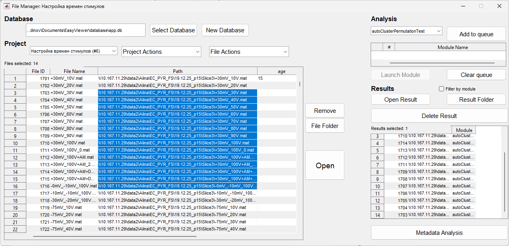

Файловый менеджер с поддержкой SQL базы данных для организации проектов, групп файлов и метаданных.

File Manager использует SQLite базу данных для хранения информации о проектах, группах, файлах и результатах анализа.
Подробное описание схемы: SQL Storage
В верхней части окна отображается путь к текущей базе данных. Кнопка Select Database позволяет выбрать существующую базу данных или создать новую.
Кнопка New Project открывает диалог создания нового проекта. Укажите название и описание проекта.

Левая панель содержит список всех проектов в базе данных. Выбор проекта загружает его файлы и группы.

Выберите проект и используйте кнопку Edit Project для изменения названия и описания.
Выберите проект и используйте кнопку Delete Project для удаления. Удаляются все связанные группы, файлы и результаты.
Кнопка New Group создает новую группу в текущем проекте. Укажите название группы.

Средняя панель содержит список групп в текущем проекте. Выбор группы фильтрует файлы по группе.

Выберите группу и используйте кнопку Edit Group для изменения названия.
Выберите группу и используйте кнопку Delete Group для удаления. Файлы остаются в проекте, но теряют связь с группой.
Кнопка Group Metadata открывает окно редактирования метаданных группы. Метаданные хранятся как пары поле-значение.

Кнопка Add File открывает диалог выбора файлов. Выбранные файлы добавляются в текущий проект.

Правая панель содержит список файлов в текущем проекте. Таблица показывает:

Выберите файл(ы) в списке и используйте выпадающий список Assign to Group для назначения группы.
Выберите файл и используйте кнопку File Metadata для редактирования метаданных файла.

Выберите файл и используйте кнопку Remove File для удаления из проекта. Файл остается в базе данных, но теряет связь с проектом.
Выберите файл и используйте кнопку Open File для открытия в Signal Viewer или Signal Analysis (в зависимости от контекста).
Выпадающий список Module содержит доступные модули автоматизации:

Кнопка Edit Module Params открывает окно редактирования параметров выбранного модуля. Параметры сохраняются в JSON формате.

Кнопка Run Module запускает выбранный модуль для выбранных файлов. Результаты сохраняются в базу данных и отображаются в списке результатов.

Модули могут быть добавлены в очередь для последовательного выполнения. Кнопка Add to Queue добавляет текущую конфигурацию модуля в очередь.
Выберите файл и используйте кнопку View Results для просмотра результатов анализа. Отображается список всех результатов для выбранного файла.

Выберите результат и используйте кнопку Delete Result для удаления из базы данных.
Кнопка Import from Excel позволяет импортировать список файлов из Excel таблицы. Укажите колонку с путями к файлам.

Кнопка Export позволяет экспортировать список файлов текущего проекта в Excel таблицу.
Поле Search позволяет фильтровать файлы по названию или пути.

Кнопка Settings открывает окно настроек File Manager: